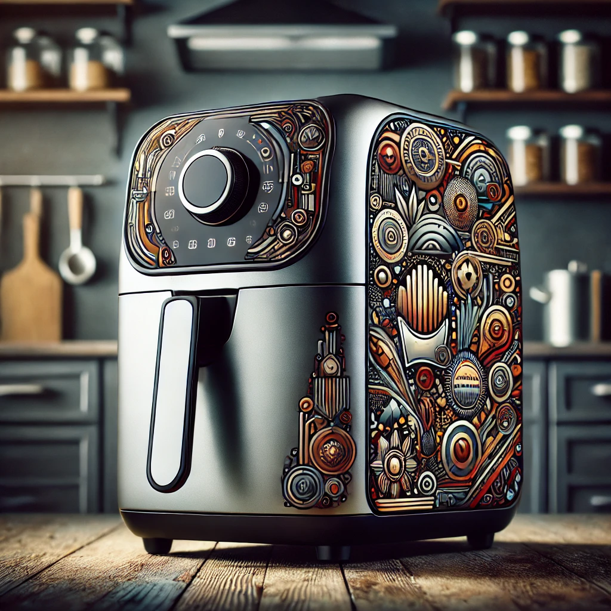

Best Air Fryer for Small Kitchens
Living in a small apartment or having limited kitchen space doesn't mean you have to miss out on the benefits of an air fryer. Many compact air fryers are designed to fit perfectly in small kitchens without compromising on functionality. Here are some of the best air fryers for small kitchens that deliver great performance while saving space.
1. DASH Compact Air Fryer 2-Quart
Key Features:
- Compact Size: 2-quart capacity, perfect for small kitchens.
- Auto Shut-Off: Prevents overcooking.
- AirCrisp Technology: Reduces added fat by 70-80% without sacrificing flavor.
Why It's Great for Small Kitchens:
The DASH Compact Air Fryer is lightweight and compact, making it ideal for small spaces. Despite its small size, it performs efficiently, making it a great choice for individuals or couples.
2. Ninja Air Fryer AF101 4-Quart
Key Features:
- 4-Quart Capacity: Sufficient for small families.
- Wide Temperature Range: From 105°F to 400°F.
- Dehydrate Function: Perfect for making snacks.
Why It's Great for Small Kitchens:
The Ninja Air Fryer AF101 is compact yet versatile, offering multiple cooking functions. Its 4-quart capacity is ideal for small families, and it fits comfortably on most countertops.
3. Instant Vortex 4-in-1 Air Fryer 6-Quart
Key Features:
- 4-in-1 Functionality: Air fry, bake, roast, and reheat.
- 6-Quart Capacity: Suitable for small families.
- One-Touch Controls: Easy to use with customizable programs.
Why It's Great for Small Kitchens:
The Instant Vortex 6-Quart Air Fryer combines multiple cooking functions in a compact design. Its one-touch controls make it easy to use, and its capacity is perfect for small households.
4. COSORI Air Fryer 3.7-Quart
Key Features:
- 3.7-Quart Capacity: Adequate for individuals or small families.
- 11 Preset Functions: Simplifies cooking various dishes.
- Compact Design: Fits easily on small countertops.
Why It's Great for Small Kitchens:
The COSORI 3.7-Quart Air Fryer is designed for efficiency and convenience. Its compact size doesn't take up much counter space, and the preset functions make cooking a breeze.
5. Chefman TurboFry 2-Quart Air Fryer
Key Features:
- 2-Quart Capacity: Ideal for singles or couples.
- Adjustable Temperature Control: Ranges from 200°F to 400°F.
- Dishwasher-Safe Basket: Easy to clean.
Why It's Great for Small Kitchens:
The Chefman TurboFry 2-Quart Air Fryer is perfect for those with limited space. Its small footprint and efficient cooking capabilities make it an excellent choice for small kitchens.
Conclusion
Finding the right air fryer for a small kitchen involves balancing compact size with functionality. The models listed above offer a range of features in a small package, ensuring you can enjoy the benefits of air frying without sacrificing precious counter space. Choose one that fits your needs and start enjoying delicious, healthy meals in no time.
Do you have any favorite compact air fryers? Share your recommendations in the comments below!